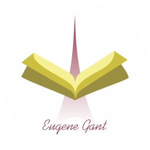

Colección de Poemas
Bienvenidos a la sección de poemas del blog. Bajo el misterioso
pseudónimo de Eugene Gant, este apasionado poeta ha tejido una colección de versos cautivadores.
A través de su anonimato, nos invita a explorar un mundo de emociones y reflexiones, donde las
palabras cobran vida y la belleza literaria se despliega en todo su esplendor. Sumérgete en este
espacio poético y déjate llevar por la magia de sus versos. Descubre la sensibilidad única de
Eugene Gant y déjate envolver por su fascinante universo lírico. ¡Bienvenidos a un viaje de palabras
y emociones!

Una Montaña Temblando en los Labios de un Poeta
Un pedazo de tierra parece resistirse a los vientos celestiales.
En tanto que un escritor tiende en el aire su brazo aún más airoso.
Del cielo o del puño cae una gota de lluvia o de sangre
Como un silencio que le grita a la nada.
El desespero del poeta son los ecos inagotables de la tierra.
La tinta del uno es el color del otro.
Cuando la tierra y los dedos,
La niebla y el cielo,
Las manos y la tinta sobre la hoja de un árbol blanco,
Hayan rendido sus fuerzas a fuerza no poder tirar más,
Ahí, solo ahí, es cuando le ha nacido un poeta a la humanidad ya perdida...
Un poeta con temblor en los labios.

Hoy Estoy Loco
Aún me asombro con tu belleza, mujer.
Aún muero antes de que me mires.
Y cuando lo haces, es como
si me trajeras del mismísimo infierno.
Porque soy consciente de que nunca viví antes de ti,
que tus ojos son a mi alma como la sangre al cuerpo,
como la sal al mar,
como la locura al enamorado.
Si alguna vez soñé, te soñé a ti.
Si alguna vez existí, existí en ti.
En este rostro milagroso,
me hundo ahora mismo.
Me revisto de una miel
que persiguen ángeles.
Hoy estoy loco.
Hoy estoy vivo.
Hoy puedo vivir y morir al mismo tiempo,
¡Amen!

La Palabra Más Simple
Hoy vi una niña entrar al salón de clases,
no me gustó que viniera disfrazada como de ángel.
Es imposible que tenga la voz más extraña y como de flauta dulce,
que me hace escuchar lo mismo, lo mismo que murmuran las estrellas en la noche.
No entiendo porque su risa brinca sobre mi corazón,
y me hace a mí también cantar un himno de mariposas.
Cuando siento como quieren salir volando desde mi estómago,
y cantar con ella.
"¡Qué niña más imprudente!", digo,
al tener esa rara voz que me llega como pequeños trocitos de azúcar,
que se desmoronan lentamente a mi alrededor.
Escucha, niña,
tu voz me hizo recordar esta mañana a un millón de abejas jóvenes que duermen en su miel.
Tu voz entró por mis ojos,
y luego tus palabras evocaron la primavera más larga del mundo en mi corazón.
Gracias, niña,
gracias por tener la misma voz que las estrellas,
cuando las escucho en la noche antes de dormir.

Condena
Soy prisionero del murmullo de las musas
Que aún no llegan a casa.
Me siento a esperar de manera irremediable
La caída de la hoja muerta
Sobre mis manos.
!Pero eso no es todo!
En mis ojos cada vez se pierden
Más voces,
Hay menos ruido.
Mi sangre no para de aullar.
Por entre un millón de ojos,
Me lleva de eco en eco
Y de respiro en respiro.

Despertar
El cielo está sucio de nubes y de estrellas.
Lo único limpio es la noche.
En la mañana todo se me hace borroso,
Especialmente los rostros y las hojas de los árboles.
Hacia el medio día ya todo es blanco.
Parece la nada reinar verticalmente sobre mis ojos.
Y cuando por fin los grados de la tierra giran,
Vuelvo a sentir los rostros y las hojas de los árboles.
Pero lo más asombroso yace a un solo paso,
A un movimiento insignificante del universo:
Luz igual que oscuridad
Oscuridad donde nace la luz.

El Camino
Me descalzo los ojos para andar mejor.
A tientas nado en mi sangre oscura,
Mientras los ecos de las formas olvidadas
Abren a tajos el camino.
Las luces turbias de lo que ahora piso,
Hoy me resultan más familiares:
Olor a tierra clara y arboles dorados.
Al llegar a una puerta sin cerrojo,
Tiento mi suerte con indiferencia.
Pues toco y escucho del otro lado
A mis pies que nunca llegaron a ser pasos
Ni siquiera un camino.